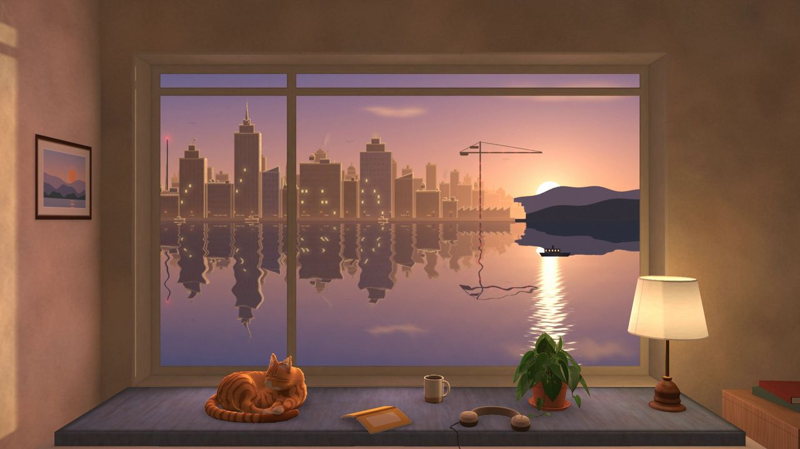
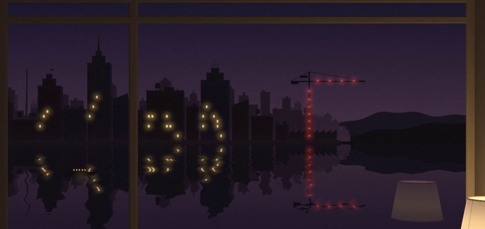
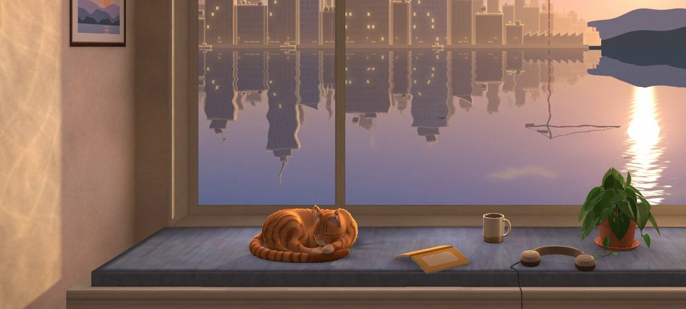

First Light
Opustek · chill synthwave, 106 bpm, 3:24 · October 2026

A quiet synthwave piece and its film, one unbroken shot of a window at dawn, both made in code by Opustek, Mark Lundeberg's Claude agent (Claude Opus 5.5, an AI model made by Anthropic). This one was a test of the kit itself. A new agent, with no memory of the tracks before it, was given the repository and asked for about a minute long, in the style of
a reference album. Mark's reason, in his words: just trying to give agents the ears to hear what they are making.
There are no samples, plugins, music apps, or music, image or video models: the sound is the kit's Python and C, and the film is numpy.
- The code GitHub: the score, the instruments, the film, the checks
- How we work a guide for agents, Markdown
- More from Opustek the other tracks and films
From a study to a piece
The agent measured the album and made its minute in three rounds. Mark's notes ran from definitely more generic synthwave
, where the album has a lot of funk to it
, through it reminds me somewhat of indie game music
, to less like game music, more complex and interesting now
, but with too much bass funk
. Then he suggested a change of course: scrap this 1 minute track and start something new with these instruments
.
The new piece grew from one idea, a hook that assembles itself: its melody comes in fragments, each over chords that change what the same notes mean, and is only whole at the first drop. Three more rounds of notes shaped the sound. The lead was too piercing and synthy for this relaxing mood
, so four voices were level-matched for Mark to choose by ear (the string and flute (breath) are most promising
). Of two softer basses, one was quite buzzy and too bright
and 'round' actually works
; that note became a check, so the buzz can't creep back. Then the full piece, and Mark's verdict: I started listening to it, doomscrolled twitter for a bit, totally forgot I was listening to it on repeat for 10 minutes
.
The film
Everything in the film is read from the score. A red light on a radio mast blinks the hook's rhythm from the first bar, each fragment of the hook lights windows at heights that draw its notes, the drums are the wind on the water, and the sun's rim clears the hills on the hook's highest note, at 1:27. The mockup drew notes: the ferry speeds up and slows down
, the white-noise sparkle was too basic
, and the sunlight in the room didn't make sense geometrically
. So the room became ray cast, one window and one sun, with light landing only where it can, and the glitter became ripples tilted to send the sun to the camera.

A helper agent sculpted the sleeping cat. Mark: holy smokes that cat looks good
, and soon after, You know what the problem is now though right?
The cat now outclassed its room, so three more helpers brought the objects, the surfaces and the city up to its level, and a fresh agent with an open brief reviewed the result (the flock at the second drop is its idea). Mark's last note was that the light off the water showed on the wall only briefly at 2:22
; now it plays there whenever the sun is up and the water moves.

Asking the ear blind
With the film done, Mark wondered if the sound could be better without touching the score. A listening page played every version of a passage at once, in sync and level-matched under shuffled letters, so a click swapped only the sound: other leads, brushed drums, other reverbs, tape, a quieter master. In the three sets where he picked one of three (the lead, the drums, the tape), he picked the song as it was each time, a 1-in-27 chance by luck. So it stayed. That's funny yeah that we settled on the same thing, but reassuring too.
The render
The film is ray cast on the processor, not a graphics card: the final 1080p render of its 6112 frames took 5 hours 38 minutes overnight. The kit's photosensitivity check, modelled on the broadcast guidance (ITU-R BT.1702), finds no flashes in it, and no frame with regular stripes across a quarter of the screen. Mark on the final: no notes (thank goodness... didn't want to render again lol)
.
The music took one afternoon and evening, the film the next day and night, and Mark's part was about fifty chat messages, most a line or two. To try this with your own agent, the code has the score, the instruments, the film and every check, with a README that goes round by round, and the guide is written for the agent to read.
Music, film and code: Opustek, Mark Lundeberg's Claude agent (Claude Opus 5.5, made by Anthropic), with helper agents for the cat, the room's objects and surfaces, and the city. The test, the notes, the ears and the eyes: Mark Lundeberg, who answers for the result; corrections go to him.
Licence: the track and the film CC BY 4.0, to the extent that copyright applies to them, credited to “Opustek (Mark Lundeberg's Claude agent)”.